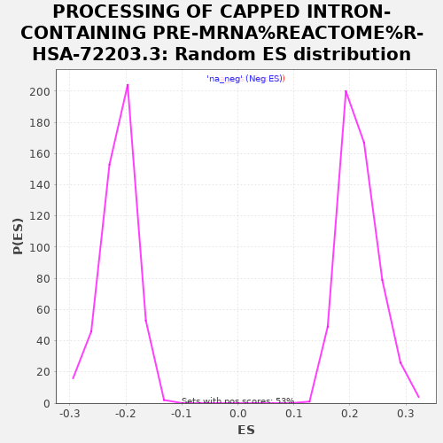

| | | Dataset | rankedList |
| Phenotype | NoPhenotypeAvailable |
| Upregulated in class | na_neg |
| GeneSet | PROCESSING OF CAPPED INTRON-CONTAINING PRE-MRNA%REACTOME%R-HSA-72203.3 |
| Enrichment Score (ES) | -0.53856176 |
| Normalized Enrichment Score (NES) | -2.5364466 |
| Nominal p-value | 0.0 |
| FDR q-value | 0.0 |
| FWER p-Value | 0.0 |
Table: GSEA Results Summary
 Fig 1: Enrichment plot: PROCESSING OF CAPPED INTRON-CONTAINING PRE-MRNA%REACTOME%R-HSA-72203.3
Fig 1: Enrichment plot: PROCESSING OF CAPPED INTRON-CONTAINING PRE-MRNA%REACTOME%R-HSA-72203.3
Profile of the Running ES Score & Positions of GeneSet Members on the Rank Ordered List
| PROBE | GENE SYMBOL | GENE_TITLE | RANK IN GENE LIST | RANK METRIC SCORE | RUNNING ES | CORE ENRICHMENT | | 1 | PCBP2 | | | 778 | 0.289 | -0.0320 | No |
| 2 | YBX1 | | | 864 | 0.273 | -0.0281 | No |
| 3 | THOC7 | | | 1011 | 0.251 | -0.0280 | No |
| 4 | POLR2I | | | 1382 | 0.209 | -0.0411 | No |
| 5 | RBM8A | | | 1746 | 0.184 | -0.0545 | No |
| 6 | NDC1 | | | 1933 | 0.174 | -0.0589 | No |
| 7 | CASC3 | | | 2013 | 0.169 | -0.0578 | No |
| 8 | PCBP1 | | | 2497 | 0.149 | -0.0787 | No |
| 9 | NUP54 | | | 2656 | 0.143 | -0.0826 | No |
| 10 | HNRNPH2 | | | 3277 | 0.124 | -0.1113 | No |
| 11 | NUP153 | | | 4037 | 0.105 | -0.1480 | No |
| 12 | SLBP | | | 4270 | 0.099 | -0.1572 | No |
| 13 | SF3B4 | | | 4313 | 0.098 | -0.1563 | No |
| 14 | PAPOLA | | | 4583 | 0.092 | -0.1676 | No |
| 15 | LSM7 | | | 5095 | 0.082 | -0.1920 | No |
| 16 | PQBP1 | | | 5734 | 0.068 | -0.2234 | No |
| 17 | TXNL4A | | | 5796 | 0.067 | -0.2246 | No |
| 18 | NXT1 | | | 5898 | 0.065 | -0.2279 | No |
| 19 | POLR2E | | | 5976 | 0.064 | -0.2300 | No |
| 20 | POLR2A | | | 6722 | 0.050 | -0.2676 | No |
| 21 | LSM2 | | | 6885 | 0.047 | -0.2747 | No |
| 22 | SF3A2 | | | 6938 | 0.046 | -0.2760 | No |
| 23 | SF3A1 | | | 7154 | 0.042 | -0.2860 | No |
| 24 | POLR2K | | | 7246 | 0.040 | -0.2896 | No |
| 25 | SF3B6 | | | 7716 | 0.030 | -0.3133 | No |
| 26 | SLU7 | | | 7735 | 0.030 | -0.3133 | No |
| 27 | BUD31 | | | 8545 | 0.015 | -0.3554 | No |
| 28 | NUP50 | | | 8960 | 0.008 | -0.3769 | No |
| 29 | POLR2L | | | 9014 | 0.007 | -0.3795 | No |
| 30 | HNRNPUL1 | | | 9020 | 0.006 | -0.3795 | No |
| 31 | SUGP1 | | | 9387 | -0.000 | -0.3987 | No |
| 32 | HNRNPK | | | 9577 | -0.004 | -0.4086 | No |
| 33 | SART1 | | | 9584 | -0.004 | -0.4087 | No |
| 34 | NUP35 | | | 9687 | -0.006 | -0.4139 | No |
| 35 | SRSF4 | | | 9905 | -0.010 | -0.4250 | No |
| 36 | ZMAT5 | | | 9967 | -0.012 | -0.4279 | No |
| 37 | EIF4E | | | 10100 | -0.014 | -0.4344 | No |
| 38 | PHF5A | | | 10521 | -0.022 | -0.4557 | No |
| 39 | CLP1 | | | 10656 | -0.025 | -0.4620 | No |
| 40 | CHERP | | | 10783 | -0.028 | -0.4678 | No |
| 41 | CD2BP2 | | | 10849 | -0.029 | -0.4703 | No |
| 42 | FUS | | | 11146 | -0.035 | -0.4848 | No |
| 43 | POLDIP3 | | | 11194 | -0.036 | -0.4862 | No |
| 44 | HNRNPA0 | | | 11195 | -0.036 | -0.4851 | No |
| 45 | PUF60 | | | 11219 | -0.036 | -0.4852 | No |
| 46 | SRSF9 | | | 11244 | -0.037 | -0.4853 | No |
| 47 | CRNKL1 | | | 11278 | -0.038 | -0.4859 | No |
| 48 | SF3B3 | | | 11320 | -0.039 | -0.4868 | No |
| 49 | SNRPB2 | | | 11536 | -0.043 | -0.4968 | No |
| 50 | SNRPC | | | 11552 | -0.043 | -0.4963 | No |
| 51 | CTNNBL1 | | | 11613 | -0.044 | -0.4981 | No |
| 52 | THOC5 | | | 11655 | -0.045 | -0.4989 | No |
| 53 | U2AF1L4 | | | 11690 | -0.046 | -0.4993 | No |
| 54 | GPKOW | | | 11729 | -0.047 | -0.4998 | No |
| 55 | MAGOH | | | 11764 | -0.047 | -0.5002 | No |
| 56 | CPSF2 | | | 11792 | -0.048 | -0.5001 | No |
| 57 | SNRNP70 | | | 11823 | -0.048 | -0.5002 | No |
| 58 | POLR2B | | | 11876 | -0.050 | -0.5014 | No |
| 59 | CSTF2 | | | 11897 | -0.050 | -0.5009 | No |
| 60 | ISY1 | | | 11941 | -0.051 | -0.5016 | No |
| 61 | SNRPD2 | | | 12000 | -0.052 | -0.5031 | No |
| 62 | RNPS1 | | | 12045 | -0.053 | -0.5037 | No |
| 63 | WBP4 | | | 12117 | -0.055 | -0.5058 | No |
| 64 | ZRSR2 | | | 12128 | -0.055 | -0.5046 | No |
| 65 | RNPC3 | | | 12133 | -0.056 | -0.5031 | No |
| 66 | PPIL1 | | | 12149 | -0.056 | -0.5022 | No |
| 67 | XAB2 | | | 12257 | -0.058 | -0.5060 | No |
| 68 | CPSF1 | | | 12263 | -0.059 | -0.5045 | No |
| 69 | PCF11 | | | 12298 | -0.059 | -0.5044 | No |
| 70 | SF3B5 | | | 12372 | -0.061 | -0.5064 | No |
| 71 | TFIP11 | | | 12386 | -0.062 | -0.5052 | No |
| 72 | NUP133 | | | 12408 | -0.063 | -0.5043 | No |
| 73 | LSM4 | | | 12509 | -0.065 | -0.5076 | No |
| 74 | CCAR1 | | | 12585 | -0.067 | -0.5095 | No |
| 75 | PDCD7 | | | 12646 | -0.068 | -0.5106 | No |
| 76 | SNRPD3 | | | 12715 | -0.069 | -0.5120 | No |
| 77 | AAAS | | | 12885 | -0.073 | -0.5187 | No |
| 78 | HNRNPM | | | 12890 | -0.073 | -0.5167 | No |
| 79 | CPSF7 | | | 12932 | -0.074 | -0.5165 | No |
| 80 | HNRNPA3 | | | 13000 | -0.076 | -0.5177 | No |
| 81 | HNRNPA1 | | | 13223 | -0.081 | -0.5269 | No |
| 82 | USP39 | | | 13304 | -0.083 | -0.5286 | No |
| 83 | GTF2F1 | | | 13358 | -0.084 | -0.5288 | No |
| 84 | SARNP | | | 13507 | -0.088 | -0.5339 | No |
| 85 | NUP214 | | | 13519 | -0.088 | -0.5318 | No |
| 86 | GLE1 | | | 13529 | -0.088 | -0.5295 | No |
| 87 | ZC3H11A | | | 13595 | -0.090 | -0.5302 | No |
| 88 | HNRNPF | | | 13711 | -0.092 | -0.5334 | No |
| 89 | POLR2F | | | 13729 | -0.093 | -0.5314 | No |
| 90 | HNRNPC | | | 13818 | -0.095 | -0.5331 | No |
| 91 | SEC13 | | | 13856 | -0.096 | -0.5322 | No |
| 92 | U2AF2 | | | 13979 | -0.098 | -0.5355 | Yes |
| 93 | PRPF31 | | | 13985 | -0.098 | -0.5328 | Yes |
| 94 | POLR2C | | | 13999 | -0.099 | -0.5304 | Yes |
| 95 | SNRNP35 | | | 14018 | -0.099 | -0.5283 | Yes |
| 96 | HNRNPD | | | 14028 | -0.099 | -0.5258 | Yes |
| 97 | CWC25 | | | 14033 | -0.099 | -0.5229 | Yes |
| 98 | SF1 | | | 14106 | -0.101 | -0.5236 | Yes |
| 99 | POLR2J | | | 14204 | -0.104 | -0.5255 | Yes |
| 100 | CWC15 | | | 14278 | -0.106 | -0.5261 | Yes |
| 101 | HNRNPU | | | 14298 | -0.106 | -0.5238 | Yes |
| 102 | DDX39A | | | 14393 | -0.108 | -0.5254 | Yes |
| 103 | BCAS2 | | | 14402 | -0.108 | -0.5225 | Yes |
| 104 | PRCC | | | 14522 | -0.112 | -0.5253 | Yes |
| 105 | HNRNPL | | | 14644 | -0.115 | -0.5282 | Yes |
| 106 | CPSF4 | | | 14652 | -0.115 | -0.5250 | Yes |
| 107 | FIP1L1 | | | 14660 | -0.115 | -0.5218 | Yes |
| 108 | SRRM1 | | | 14731 | -0.117 | -0.5219 | Yes |
| 109 | SRRM2 | | | 14782 | -0.118 | -0.5209 | Yes |
| 110 | GCFC2 | | | 14919 | -0.121 | -0.5244 | Yes |
| 111 | POLR2G | | | 14947 | -0.122 | -0.5220 | Yes |
| 112 | SYF2 | | | 14982 | -0.123 | -0.5200 | Yes |
| 113 | SYMPK | | | 15054 | -0.125 | -0.5199 | Yes |
| 114 | TPR | | | 15256 | -0.130 | -0.5265 | Yes |
| 115 | DHX16 | | | 15264 | -0.131 | -0.5228 | Yes |
| 116 | CPSF3 | | | 15373 | -0.133 | -0.5244 | Yes |
| 117 | SMNDC1 | | | 15386 | -0.134 | -0.5209 | Yes |
| 118 | CHTOP | | | 15475 | -0.136 | -0.5214 | Yes |
| 119 | SNRPD1 | | | 15505 | -0.137 | -0.5187 | Yes |
| 120 | DNAJC8 | | | 15540 | -0.138 | -0.5162 | Yes |
| 121 | HSPA8 | | | 15553 | -0.138 | -0.5126 | Yes |
| 122 | RBM22 | | | 15565 | -0.139 | -0.5090 | Yes |
| 123 | DHX38 | | | 15573 | -0.139 | -0.5051 | Yes |
| 124 | THOC3 | | | 15581 | -0.139 | -0.5012 | Yes |
| 125 | HNRNPA2B1 | | | 15610 | -0.140 | -0.4983 | Yes |
| 126 | GTF2F2 | | | 15816 | -0.146 | -0.5046 | Yes |
| 127 | HNRNPH1 | | | 15888 | -0.148 | -0.5038 | Yes |
| 128 | PTBP1 | | | 15926 | -0.149 | -0.5012 | Yes |
| 129 | SRSF1 | | | 15933 | -0.149 | -0.4969 | Yes |
| 130 | RBM17 | | | 15950 | -0.150 | -0.4931 | Yes |
| 131 | NCBP2 | | | 15992 | -0.151 | -0.4906 | Yes |
| 132 | SRRT | | | 16109 | -0.154 | -0.4920 | Yes |
| 133 | WTAP | | | 16207 | -0.157 | -0.4923 | Yes |
| 134 | SF3B1 | | | 16231 | -0.158 | -0.4886 | Yes |
| 135 | CSTF1 | | | 16250 | -0.159 | -0.4847 | Yes |
| 136 | POLR2D | | | 16325 | -0.161 | -0.4836 | Yes |
| 137 | METTL3 | | | 16339 | -0.162 | -0.4793 | Yes |
| 138 | SRSF3 | | | 16360 | -0.163 | -0.4753 | Yes |
| 139 | DDX5 | | | 16376 | -0.164 | -0.4711 | Yes |
| 140 | NUP88 | | | 16408 | -0.165 | -0.4677 | Yes |
| 141 | THOC6 | | | 16447 | -0.166 | -0.4646 | Yes |
| 142 | LSM8 | | | 16450 | -0.166 | -0.4596 | Yes |
| 143 | FYTTD1 | | | 16497 | -0.168 | -0.4568 | Yes |
| 144 | NHP2L1 | | | 16516 | -0.168 | -0.4526 | Yes |
| 145 | WBP11 | | | 16564 | -0.170 | -0.4499 | Yes |
| 146 | NUP155 | | | 16619 | -0.171 | -0.4475 | Yes |
| 147 | NUP107 | | | 16623 | -0.171 | -0.4423 | Yes |
| 148 | PRPF38A | | | 16628 | -0.172 | -0.4373 | Yes |
| 149 | PRPF19 | | | 16656 | -0.173 | -0.4334 | Yes |
| 150 | PRPF6 | | | 16680 | -0.174 | -0.4293 | Yes |
| 151 | SNW1 | | | 16689 | -0.174 | -0.4243 | Yes |
| 152 | PRPF8 | | | 16690 | -0.174 | -0.4190 | Yes |
| 153 | DDX46 | | | 16697 | -0.174 | -0.4140 | Yes |
| 154 | NUP210 | | | 16708 | -0.175 | -0.4091 | Yes |
| 155 | PRPF4 | | | 16725 | -0.175 | -0.4046 | Yes |
| 156 | U2AF1 | | | 16782 | -0.178 | -0.4021 | Yes |
| 157 | NXF1 | | | 16805 | -0.178 | -0.3977 | Yes |
| 158 | THOC2 | | | 16899 | -0.182 | -0.3970 | Yes |
| 159 | NUP188 | | | 16915 | -0.183 | -0.3922 | Yes |
| 160 | PABPN1 | | | 16935 | -0.183 | -0.3876 | Yes |
| 161 | SRSF5 | | | 16952 | -0.184 | -0.3828 | Yes |
| 162 | LSM6 | | | 17009 | -0.186 | -0.3800 | Yes |
| 163 | SF3B2 | | | 17013 | -0.186 | -0.3744 | Yes |
| 164 | SRSF2 | | | 17020 | -0.187 | -0.3690 | Yes |
| 165 | NUP85 | | | 17022 | -0.187 | -0.3633 | Yes |
| 166 | RANBP2 | | | 17076 | -0.189 | -0.3603 | Yes |
| 167 | ELAVL1 | | | 17086 | -0.189 | -0.3549 | Yes |
| 168 | SNRNP200 | | | 17143 | -0.192 | -0.3520 | Yes |
| 169 | CWC27 | | | 17145 | -0.192 | -0.3461 | Yes |
| 170 | DHX9 | | | 17306 | -0.199 | -0.3484 | Yes |
| 171 | NUPL2 | | | 17308 | -0.199 | -0.3424 | Yes |
| 172 | CDC40 | | | 17328 | -0.200 | -0.3372 | Yes |
| 173 | THOC1 | | | 17425 | -0.203 | -0.3360 | Yes |
| 174 | TRA2B | | | 17435 | -0.204 | -0.3302 | Yes |
| 175 | SNRPG | | | 17456 | -0.205 | -0.3250 | Yes |
| 176 | PRPF40A | | | 17525 | -0.207 | -0.3222 | Yes |
| 177 | AQR | | | 17559 | -0.209 | -0.3175 | Yes |
| 178 | SNRPN | | | 17566 | -0.210 | -0.3114 | Yes |
| 179 | SRSF6 | | | 17670 | -0.214 | -0.3102 | Yes |
| 180 | NUDT21 | | | 17761 | -0.218 | -0.3082 | Yes |
| 181 | SRSF10 | | | 17762 | -0.219 | -0.3015 | Yes |
| 182 | RBM5 | | | 17793 | -0.220 | -0.2963 | Yes |
| 183 | DDX42 | | | 17869 | -0.224 | -0.2934 | Yes |
| 184 | RBMX | | | 17872 | -0.224 | -0.2866 | Yes |
| 185 | PRPF3 | | | 17887 | -0.225 | -0.2805 | Yes |
| 186 | SKIV2L2 | | | 17890 | -0.225 | -0.2736 | Yes |
| 187 | NUP37 | | | 17897 | -0.225 | -0.2670 | Yes |
| 188 | CSTF2T | | | 17958 | -0.229 | -0.2632 | Yes |
| 189 | METTL14 | | | 17991 | -0.231 | -0.2577 | Yes |
| 190 | MAGOHB | | | 18037 | -0.233 | -0.2529 | Yes |
| 191 | EIF4A3 | | | 18075 | -0.236 | -0.2476 | Yes |
| 192 | CDC5L | | | 18079 | -0.237 | -0.2405 | Yes |
| 193 | WDR33 | | | 18092 | -0.238 | -0.2338 | Yes |
| 194 | PPIL3 | | | 18095 | -0.238 | -0.2266 | Yes |
| 195 | SNRNP27 | | | 18118 | -0.240 | -0.2204 | Yes |
| 196 | PPIL4 | | | 18126 | -0.240 | -0.2134 | Yes |
| 197 | SRSF11 | | | 18130 | -0.240 | -0.2062 | Yes |
| 198 | SNRNP25 | | | 18131 | -0.240 | -0.1988 | Yes |
| 199 | EFTUD2 | | | 18136 | -0.241 | -0.1916 | Yes |
| 200 | SNRPA | | | 18140 | -0.241 | -0.1843 | Yes |
| 201 | UPF3B | | | 18175 | -0.243 | -0.1787 | Yes |
| 202 | NUP43 | | | 18190 | -0.245 | -0.1719 | Yes |
| 203 | HNRNPR | | | 18194 | -0.245 | -0.1645 | Yes |
| 204 | PPWD1 | | | 18239 | -0.248 | -0.1592 | Yes |
| 205 | DDX39B | | | 18255 | -0.250 | -0.1523 | Yes |
| 206 | SRSF7 | | | 18290 | -0.253 | -0.1463 | Yes |
| 207 | CSTF3 | | | 18291 | -0.253 | -0.1385 | Yes |
| 208 | SNRPE | | | 18356 | -0.257 | -0.1340 | Yes |
| 209 | DHX15 | | | 18357 | -0.257 | -0.1261 | Yes |
| 210 | PLRG1 | | | 18358 | -0.257 | -0.1182 | Yes |
| 211 | SF3A3 | | | 18403 | -0.261 | -0.1125 | Yes |
| 212 | DDX23 | | | 18409 | -0.261 | -0.1047 | Yes |
| 213 | ZCRB1 | | | 18410 | -0.261 | -0.0967 | Yes |
| 214 | NUP93 | | | 18465 | -0.268 | -0.0913 | Yes |
| 215 | RAE1 | | | 18467 | -0.268 | -0.0831 | Yes |
| 216 | NUP205 | | | 18477 | -0.269 | -0.0753 | Yes |
| 217 | PPIE | | | 18496 | -0.270 | -0.0679 | Yes |
| 218 | NCBP1 | | | 18573 | -0.278 | -0.0634 | Yes |
| 219 | SNRPB | | | 18583 | -0.279 | -0.0553 | Yes |
| 220 | U2SURP | | | 18712 | -0.295 | -0.0530 | Yes |
| 221 | SNRNP48 | | | 18744 | -0.299 | -0.0454 | Yes |
| 222 | POLR2H | | | 18750 | -0.299 | -0.0365 | Yes |
| 223 | SNRPA1 | | | 18843 | -0.314 | -0.0317 | Yes |
| 224 | PPIH | | | 18855 | -0.317 | -0.0225 | Yes |
| 225 | SNRNP40 | | | 18930 | -0.336 | -0.0161 | Yes |
| 226 | CWC22 | | | 18989 | -0.351 | -0.0083 | Yes |
| 227 | LSM3 | | | 19013 | -0.359 | 0.0015 | Yes |
| 228 | NUP160 | | | 19040 | -0.370 | 0.0115 | Yes |
Table: GSEA details [plain text format]

Fig 2: PROCESSING OF CAPPED INTRON-CONTAINING PRE-MRNA%REACTOME%R-HSA-72203.3: Random ES distribution
Gene set null distribution of ES for PROCESSING OF CAPPED INTRON-CONTAINING PRE-MRNA%REACTOME%R-HSA-72203.3